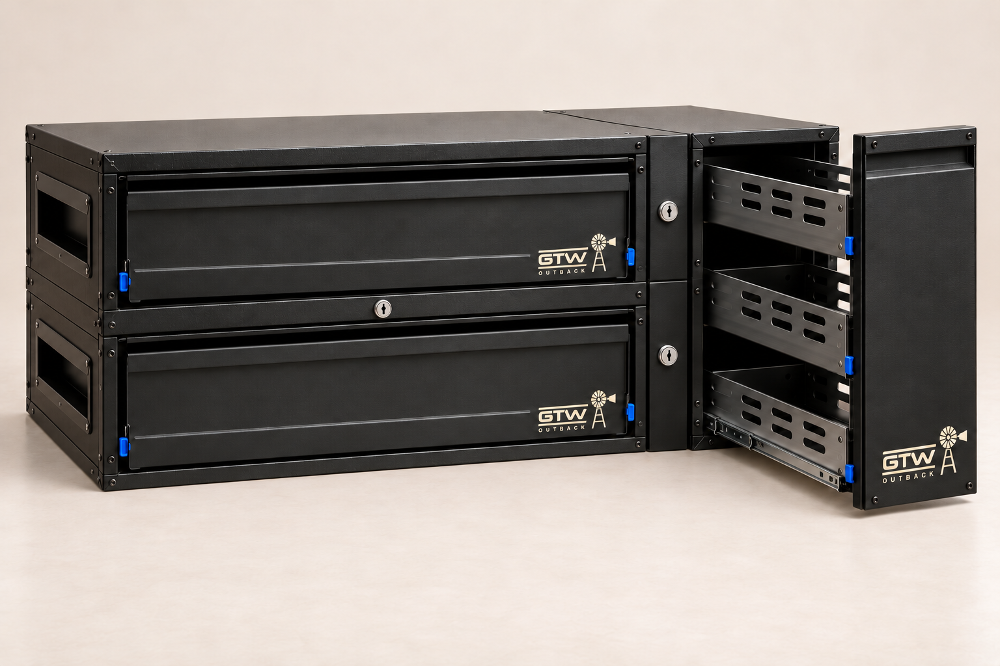
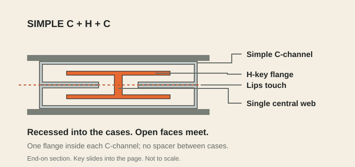
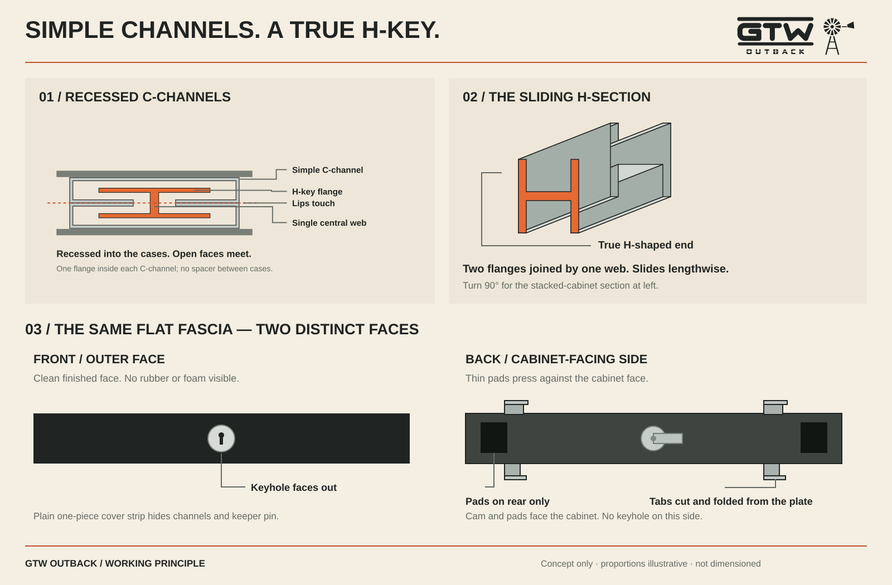

Bring the cases together.
Two recessed tracks on each joining surface run the full depth, open at both ends. Opposing channel mouths meet face to face, so the cabinet cases can touch.
GTW OUTBACK / INTERLOCKING FIT-OUT CONCEPT
There’s a better way to juggle work and play. Join your drawers, pantry and kitchen into a fit-out that can change with you.
See how the modules join ↓
SIMPLE PARTS. USEFUL FREEDOM.
The channels and H-key join the cabinets. The fascia hides the connection and retains the keeper pin.
Two recessed tracks on each joining surface run the full depth, open at both ends. Opposing channel mouths meet face to face, so the cabinet cases can touch.
Slide the aluminium key along the paired channels. Its two flanges capture both tracks. Retain the key with a simple keeper pin and a stop at the far end.
Hook the lower tabs into plain cabinet slots, stand the cover upright and turn the cam lock. Upper tabs locate it; thin foam pads on the cabinet-facing rear take up play. None are fitted to the outer face.

BEHIND THE COVER
Simple single-wall C-channels sit in folded pockets, flush with the outside of the case. One channel is turned 180° to meet its neighbour. The H-key’s flanges sit inside the channels, while its web crosses the seam.
The channel fixings are recessed clear of the key. The connection components can be removed and replaced.
CUT. FOLD. FIT.
One aluminium blank, integral folded tabs and a standard cam lock. Rubber or foam pads sit only on the cabinet-facing back of the cover.

Open the drawing for a closer look.
A horizontal fascia spans the stacked-drawer join and stops short at both ends. Vertical covers finish the side-by-side joins without overlapping the horizontal strip.
One vertical cover matches one drawer-module height. Stack two drawers and use two vertical covers beside the pantry. Matching slot positions let the same covers work across the range.
The tabs locate the plate. The lock prevents it reopening. Replaceable foam pads sit behind the fascia to take up play; the cover hides the tracks and retains the keeper pin.